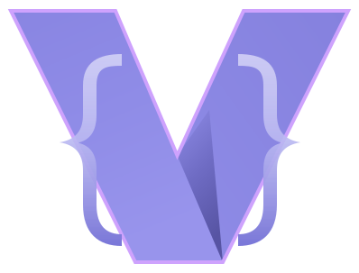

Opens before you blink
7 ms from process start to first frame. A rope buffer with O(1) snapshots keeps typing at 0.3 µs per keystroke, even in a 1 MiB file.

A terminal text editor that doesn’t make you learn a new language. Ctrl+S saves, Ctrl+F finds, Ctrl+Z undoes — the rest you already know.
The actual interface — gutter, tabs, syntax highlighting, status bar, contextual hints.
Why Vela
No modes to memorise, no startup splash, no plugin manager to configure before you can type. Open it, edit, save.
7 ms from process start to first frame. A rope buffer with O(1) snapshots keeps typing at 0.3 µs per keystroke, even in a 1 MiB file.
Ctrl+S, Ctrl+F, Ctrl+Z, Ctrl+P. Every command is also in a fuzzy command palette when you forget the shortcut.
Saves are atomic: temp file, fsync, rename. A failed write leaves the original untouched and the buffer dirty — never a truncated file.
Streaming search scans 100 MB in 23 ms. Rendering only touches the visible lines, so scrolling a huge log stays smooth — and word wrap (Alt+W) is measured for the rows on screen, never the file. A 2 GB file opens in 1.2 s behind a panel that counts the bytes it has actually read.
UTF-8 and UTF-16 with BOM detection, LF/CRLF/CR preserved per file, permissions and symlinks kept, binary files refused rather than corrupted.
Transaction-based history with coalescing that restores cursor and selection. Replace-all, indent and trim are each one undo step.
Ctrl+Alt+Down stacks carets, Ctrl+D adds one per occurrence of the selection, Alt+Click puts one where you point. Everything you type lands at every caret — and comes back in a single undo.
Recent files and the last session are restored on start, so closing the editor is not the same as losing your place.
A panel is framed on the edge of its cells rather than in whole ones, so a border is a hairline and never a bar. Prefer the older block chrome? Ctrl+Shift+U, or --ui cell.
Muscle memory
Every binding is remappable in config.toml. F1 builds its help screen from your live keymap, so it never goes stale.
Get started
Vela is not on crates.io yet. Clone it and install from source — you need Rust 1.82 or newer.
$ git clone https://github.com/r3dc4p0/vela.git $ cd vela $ cargo install --path .
Then run vela notes.md in any terminal. macOS, Linux and Windows are supported through crossterm.